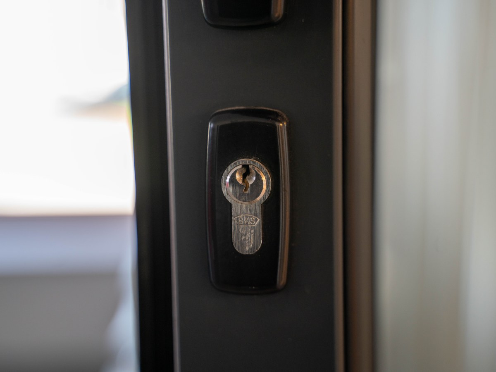
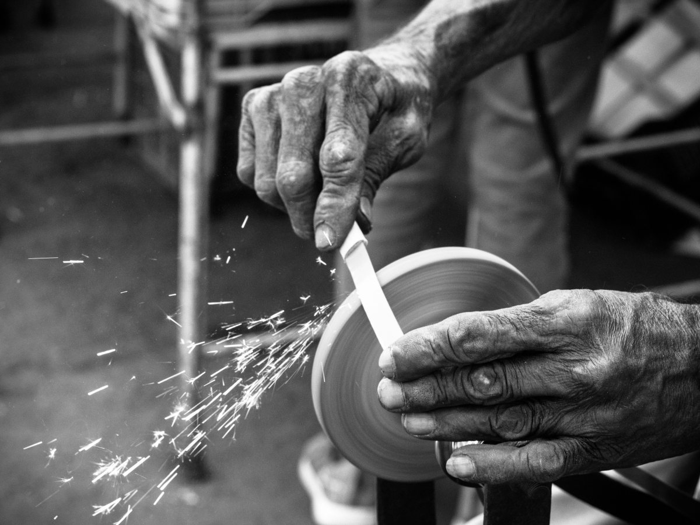
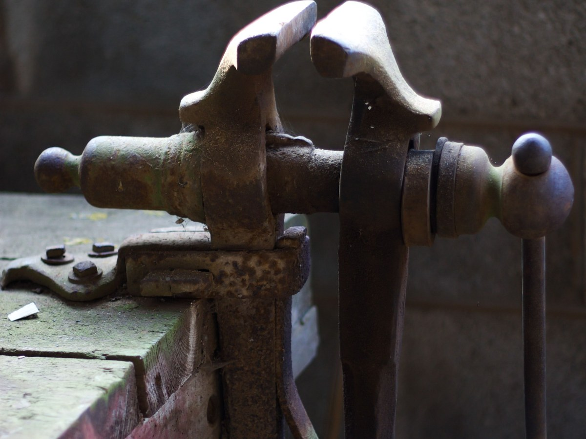
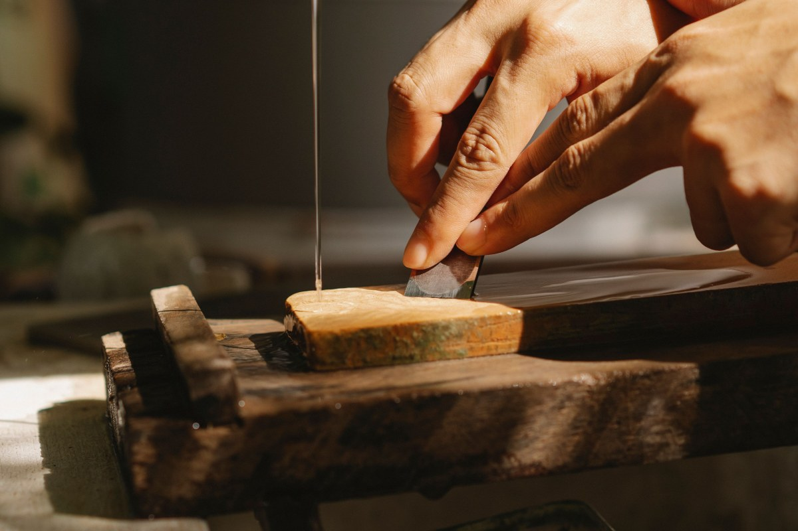
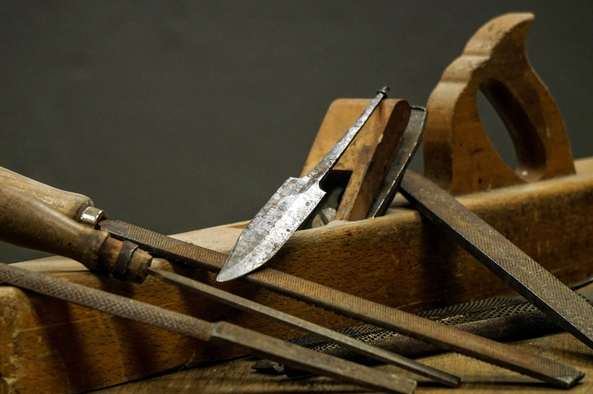
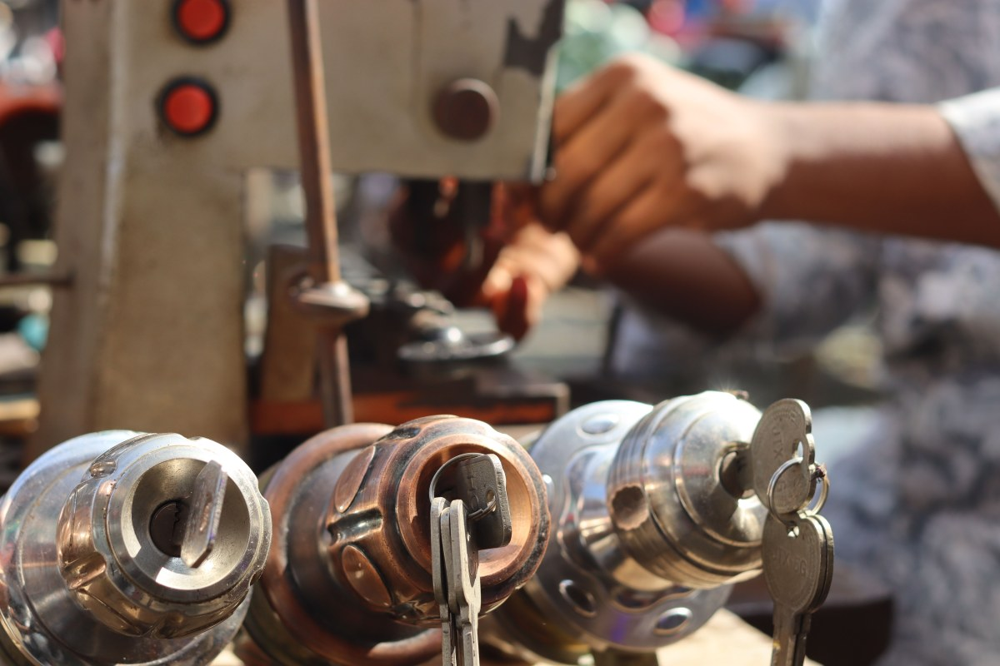

Maipú · Tres Norte y Nueva San Martín
¿Hacen llaves? Pregunta en cuál.
Ferretería Chamorro: dos locales y 526 reseñas entre ambos.
- 2locales en Maipú
- 526reseñas entre las dos fichas
- 7días abre Tres Norte
- 0webs: una ficha sin reclamar y un Instagram
Copia de llaves
Lo que se trae, lo que se copia y cuánto se espera
- QUÉ LLAVES
De casa y de candado
Las de auto con chip, se preguntan.
- QUÉ TRAER
La original
Una llave no se copia de una foto.
- CUÁNTO
Unos minutos
Mientras esperas en el mesón.
- DÓNDE
Pregunta en cuál local
Por teléfono, antes de ir.
Si copian llaves, cuáles y en qué local: de ejemplo, se confirma por teléfono.
Dos mesones, el mismo apellido.
Los dos locales
¿Cuál te queda más cerca?
- Tres Norte 1672
- (2) 2763 2815
- Horario
- Lun a sáb 9:00–19:00 · dom 9:30–18:00
- Nueva San Martín 2398
- (2) 2771 4276
- Horario
- Abre el domingo hasta las 18:00; el resto, por confirmar
Son dos teléfonos fijos: llama al local que te quede más cerca.
Tres Norte · Nueva San Martín Ver los dos en Google Maps
En los dos mesones
Qué hay
-
Verificado
Entrega a domicilio
Declarada en las dos fichas.
-
Verificado
Retiro en la puerta
En Nueva San Martín.
-
Cerrajería
Candados
Por confirmar.
-

Puertas
Cilindros y cerraduras
Por confirmar.
-

Filo
Afilado
Por confirmar.
-

Banco
Prensas y limas
Por confirmar.
Familias de referencia; lo verificado es la entrega y el retiro.
«Para ser de barrio fue completa».
Una reseña de Google
Latón y fierro
El mesón de las llaves



Fotos de referencia: ninguna es de la ferretería.
Para el dueño
Qué es real y qué falta
Lo verificado
Las dos direcciones y teléfonos, los horarios, la entrega, las reseñas y el Instagram.
Lo de ejemplo
La copia de llaves y sus plazos, las familias de productos y las fotos.
Lo que falta
Confirmar las llaves y una web: una ficha no tiene sitio y la otra ni siquiera está reclamada.